This post looks into some behavior related to poison damage not being applied in certain areas in Yellow. The special state where these checks are skipped can be stored, which will allow visiting other areas without taking poison damage or fainting while walking. This mode also persists across saving/resetting, effectively removing these overworld checks for the rest of the game.
In Pokemon Yellow there are a few special added events that involve the player's Pikachu. During all three of these events, the player's Pikachu stops following the player, and is locked in place in the overworld. It will also disappear from the Party menu, and be prevented from being deposited in the PC.
The events:
- Pewter City: The Jigglypuff in the Pokemon Center will put the player's Pikachu to sleep
- Route 25: Pikachu will run to Bill and be confused until he turns back into a human
- Vermillion City: The Clefairy in the Fan Club will cause Pikachu to display hearts
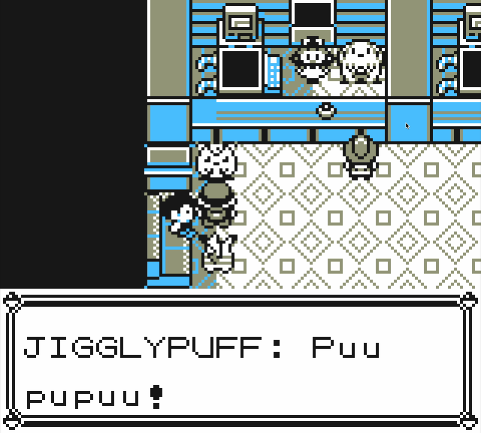 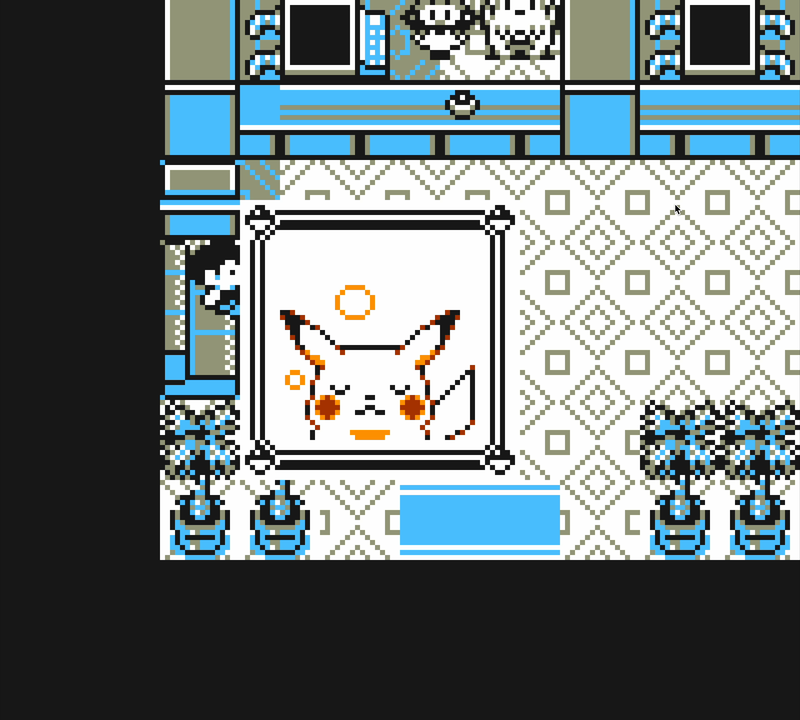 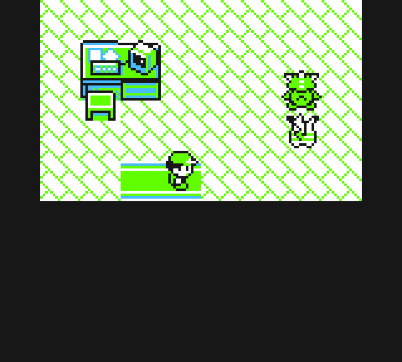
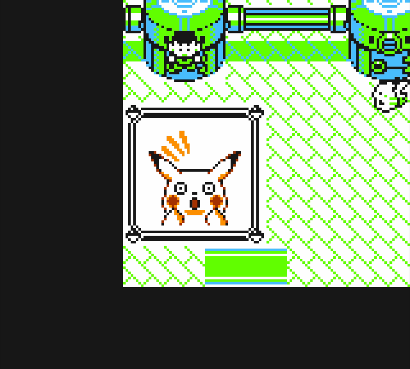 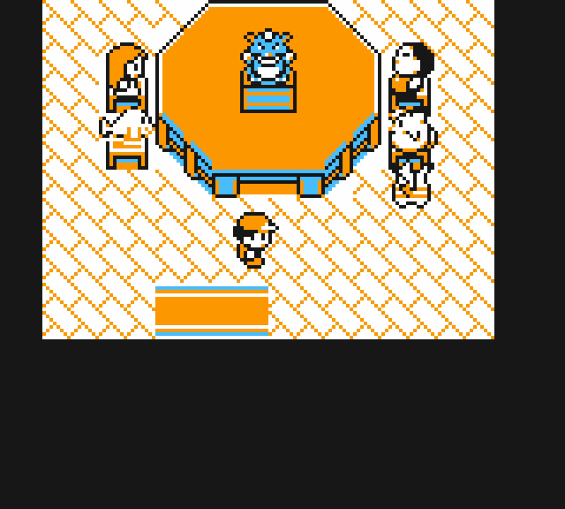 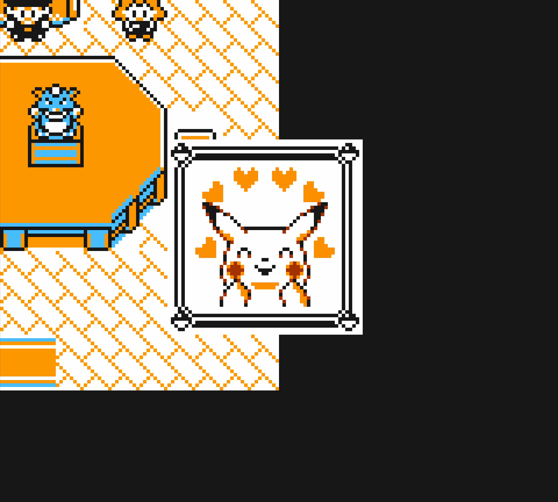
The player's Pikachu will resume following when each of these events finish, or if the player leaves the area. During the event however, the player can freely move around the interior map, and even talk to other NPCs. There are some failsafes in place likely to ensure that during overworld movement these events aren't interrupted. Poison damage, for instance, could result in Pikachu fainting and disappearing from the overworld before the event can properly end.
In order to stop poison damage from applying in these interior locations, the game sets a flag that prevents poison damage from applying every few steps! This flag does not exist in Red or Blue. The flag is set upon entering each of the interiors (Pewter Center, Bill's House, Fan Club) and unset upon returning to each of the exteriors (Pewter City, Route 25, Vermillion City).
What's interesting is, this poison-supressing flag is set immediately upon entering the interior, whether an event has played or not, and is only unset on each of the three specific corresponding exterior maps (highlighted orange below). If it were possible to go directly from one of the inside locations, to a different (non-orange) location, it would be possible to skip the re-enabling of this flag. Or in other words, you could walk around the rest of the game without ever taking any poison damage!
The flag also supresses a few other walking-based events, such as gaining day care experience, and checking to ensure that the Player's party has fainted. You can prove this to yourself too, by just entering the Pewter City Pokemon Center, and depositing all your Pokemon except one that's fainted. The game will allow you to freely walk around, and only black out after exiting back to the overworld map. This doesn't happen in other Pokemon Centers, where you'll faint after depositing and taking one step.
Yellow version has another change related to two of these locations. Bill's House and the Fan Club both use the Silph Co tileset, which in Red and Blue versions allows an escape rope or dig to be used to return back to the overworld. In Yellow though, these two specific maps have an additional check that prevents escaping in this manner. (Compare to Red/Blue)
This is a bug fix, as those two locations aren't dungeons. However! It also fixes a potential new issue that would have arisen-- if you were in Bill's House or the Fan Club, an escape rope would bypass visiting the exterior map, which could skip disabling the Poison-supressing flag. By fixing the escape rope issue, the player is instead forced to exit these event areas directly through the door to the outer map. This ensures the flag is properly unset and that poison damage / fainting checks will continue to apply.
There is still a way to skip visiting the exterior maps and save the flag! We can use the Safari Zone exit glitch to have the Warden call us back after taking 500 steps from any map, to return back to the Safari Zone. This allows us to:
1. Heal our team at Fuchsia city (any town besides Pewter or Vermillion)
2. Setup the Safari Zone warp glitch (steps)
3. Enter one of the three interior locations that set the flag
4. Walk 500 steps within the area, without exiting
5. Get returned to the Safari Zone, and use an escape rope or fly (This avoids returning to the right exterior map)
Then, we'll return to Fuchsia city with the flag set, and observe that we can now walk around the overworld without taking any poison damage. Similarly, if we deposit all of our party besides fainted Pokemon, we can explore most of the map without blacking out. (Pictured below, at Lavendar tower with only one fainted Pokemon).
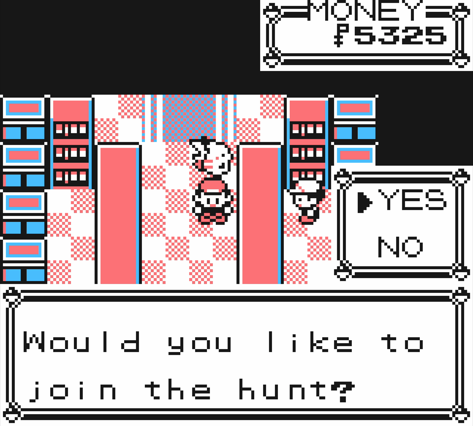 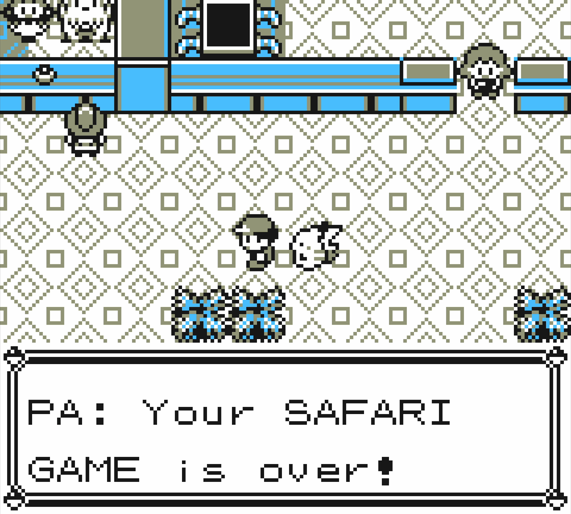
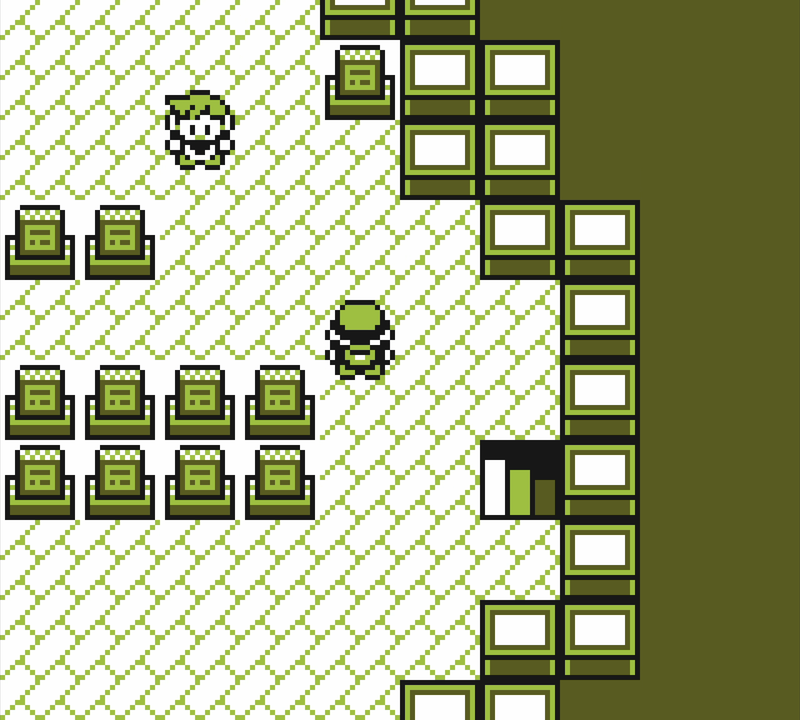 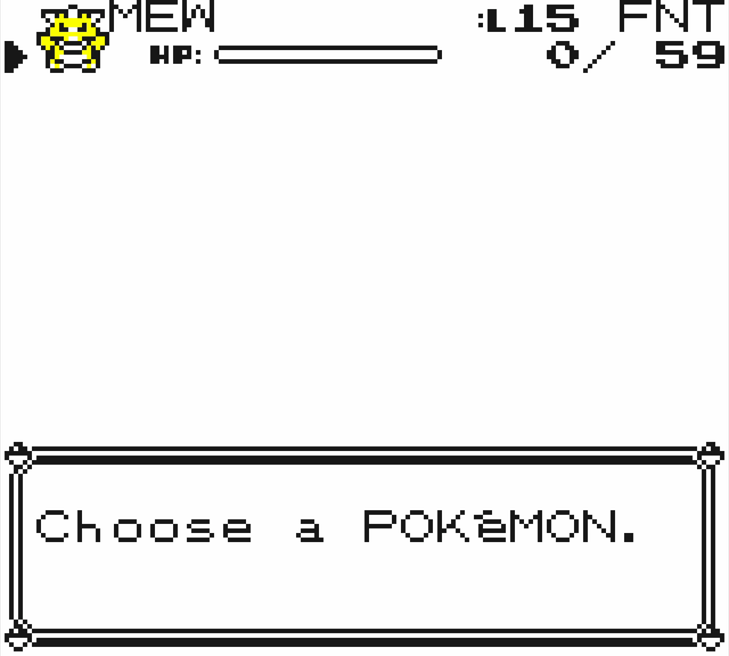
If we enter any battles, we'll instantly lose before even sending out another Pokemon. I'm not sure if there's anything else interesting that can be done at this point, but the flag will persist across saving and resetting, and you can effectively permanently disable poison damage using this method.
If you walk into (or fly into) any of the three exterior locations that unset the flag, with a fainted team, you will instantly faint upon one step after the map transition. This is only three locations, however, so it's relatively easy to avoid them.
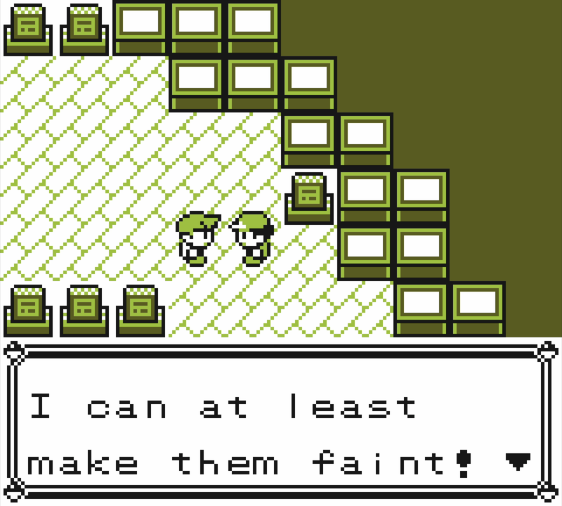 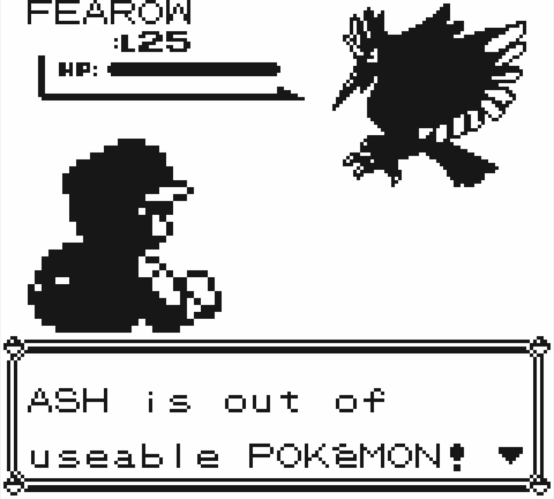
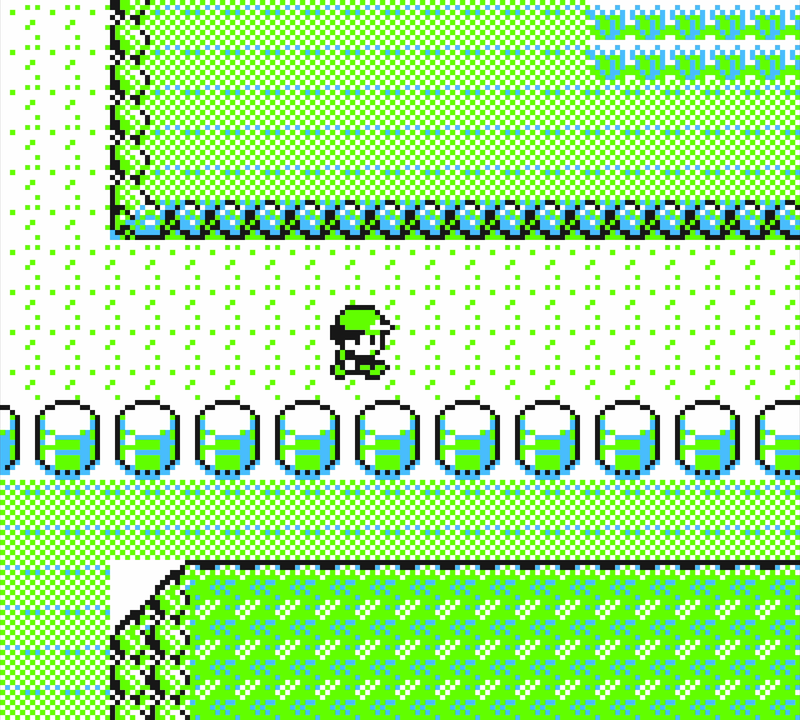 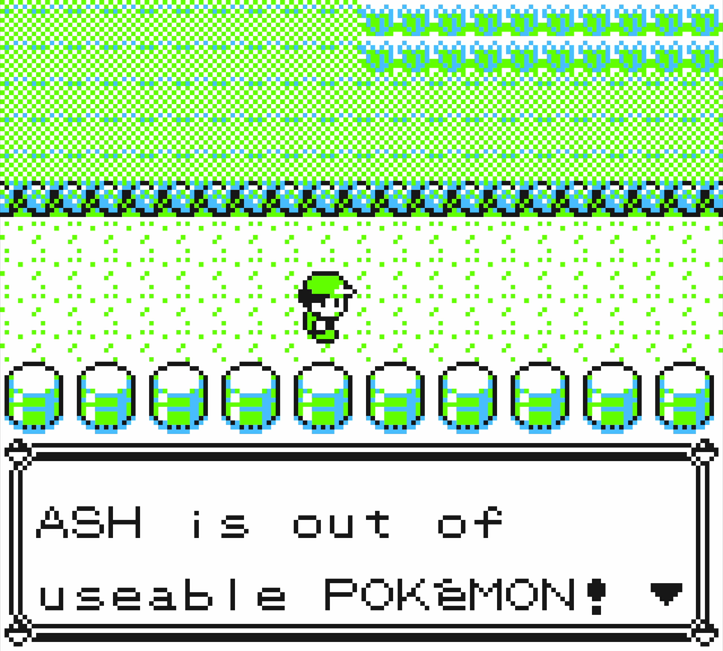
In Red and Blue, there is a similar bug (Poison step avoidance) that allows you to explore the overworld with a fainted party, by walking 3 steps, save/quitting, and reloading, then taking another 3 steps, etc. Yellow fixes this by making the fainted party check apply every single step. However, with the introduction of this poison/fainting supression flag, this makes it much easier and less tedious to use Yellow to see what side-effects a fainted party has in the overworld.
What's suprising to me is not just that this flag is only used on these three maps, but even if the flag didn't exist at all, I don't think it'd be a big deal if the events were allowed to be interrupted. You'd just see Pikachu fainting in the overworld, and the event being interrupted, as if you left normally. And each of the events verifies that the Pikachu is healthy and not-fainted anyway. It makes me more wonder about an older build of the game, and what other side-effects might have been associated with these overworld events.
{kind=link}